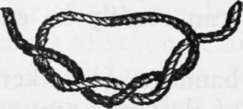

Bleeding
Description
This section is from the book "Camping And Woodcraft", by Horace Kephart. Also available from Amazon: Camping and Woodcraft.
Bleeding
Rather free bleeding is good for a wound, because the blood washes out many, if not all, cf the dangerous pus germs that may have entered at the time of the injury. Do not touch the wound with the fingers, nor with anything else than a surgically clean instrument and compress. Observe whether the bleeding is arterial or venous.
If it comes from a vein, the blood will be dark red or purplish, and will flow in a steady stream. If an artery is cut or lacerated, the blood will be bright red, and it probably will spurt in jets. Bind the. compress on firmly. Generally this will suffice to stop the bleeding.
In case of arterial bleeding, try to locate the artery above the wound (between it and the heart) by pressing very hard where you think the artery may pass close to a bone, and watch if this checks the flow. If so, then, if the vessel is only a small one, just continue the pressure: it is likely that a clot will form and the artery close itself. In extremity, the flow from even a large artery can be checked for a while by pressing very firmly with thumb and finger directly into the wound. There is record of an Austrian soldier who stopped bleeding from the great artery of the thigh for four hours by plugging the wound with his thumb; if he had let go for a minute he would have bled to death. But if the injury is so situated that a tourniquet can be applied (anywhere except in the neck, body, or very close to the body) one can readily be extemporized.
Tourniquet
Tie a strong bandage (handkerchief, belt, suspender, rope, strip of clothing) around the wounded member, and between the wound and the heart. Under it, and directly over the artery, place a smooth pebble, a cartridge, piece of stick, or other hard lump. Then thrust a stout stick under the bandage, and twist until the wound stops bleeding. The lump serves two purposes: it brings the most pressure where it will do the most good, and it allows passage of enough blood on either side to keep the limb from being strangled to death. However, do not apply more pressure than is needed to stop the bleeding—excessive pressure of a hard lump may rupture the blood-vessel.
If the position of the artery above the wound cannot be determined, then, in case of a gaping wound that would be hard to plug, apply the tourniquet without any lump, and twist it very tight indeed. This can only be done for a short time, while you are preparing to ligate the artery; if prolonged, it will kill the limb, and gangrene will ensue. In case of a punctured wound, such as a bullet hole, it is better to push a plug of sterilized gauze hard down in the wound itself, leaving the outer end projecting so that a bandage will hold the plug firmly on the artery. This must be done, anyway, wherever a tourniquet cannot be used.
Ligating
The above expedients are only temporary; for a cut artery, if of any considerable size, must be ligated—that is to say, permanently closed by tying one or both of the severed ends. To do this you must have at least a pair of sharp-pointed fcreeps or strong tweezers. Get hold of the end of the artery with this, draw it out, and have some one hold it. Then take a piece of strong thread that has been sterilized in boiling salt water (supposing you have no regular antiseptic) make a loop in it as for a reef knot, but pass the right hand end of the thread twice around the other, instead of once (Fig. 193—surgeon's knot—it will never slip). Slip this loop down over the forceps and around the end of the artery, and draw tight. If the vessel bleeds from both ends, ligate both. When an artery is merely ruptured, not severed, cut it clean in two before operating; it will close better.
Nosebleed
If the nose does not stop bleeding of itself, hold against the nape of the neck a cloth wrung out in cold water. Put a roll of paper between the upper lip and the gum. Do not blow the nose nor remove the clots. Holding the arms above the head will help. If the bleeding still continues, dissolve a teaspoonful of salt in a cup of water, and snuff some of this brine up the nose.
Should these measures fail, make a plug by rolling up part of a half-inch strip of gauze or soft cloth, push the plug gently up the nose with a pencil, pack the rest of the strip tightly into the nostril, and let the end protude. If there is leakage backward into the mouth, pack the lower part of plug still more tightly. Leave the plug in place several hours; then loosen with warm water or oil, and remove very gently.
Fig. 193. Surgeon's knot.
Internal Bleeding
This may be either from the stomach or from the lungs. In hemorrhage from the stomach, the blood is vomited. It is brown or "coffee-ground," and may be mixed with food. There is tenderness and pain in the region of the stomach.
Bleeding from the lungs is preceded by a saltish taste in the mouth. Blood rushes from the mouth and nose. It is bright red and frothy.
Although the disease producing one or other of these symptoms may be grave, yet the attack of bleeding itself is not likely to result seriously. In either case the first-aid treatment is absolute rest in bed, and cold cloths over the affected part. If the bleeding is from the stomach, the patient's head should be kept low; if from the lungs, the head and shoulders should be propped up, unless there be a tendency to faintness.
Continue to: